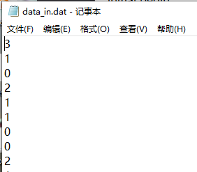

キーワード: testbench、シミュレーション、ファイル読み書き
Verilog コードの設計が完了した後、重要なステップである論理機能シミュレーションも行う必要があります。シミュレーション刺激ファイルは testbench と呼ばれ、各設計モジュールの最上位に置かれ、モジュールを体系的にインスタンス化して呼び出し、シミュレーションを行うために使用します。
誇張ではなく、少し複雑な Verilog 設計の場合、シミュレーションを行わなければ、経験豊富なベテランでも、99.9999% 以上の設計は正常に動作しません。シミュレーションが設計よりも重要だとは言えませんが、一般的に、シミュレーションにかかる時間は設計にかかる時間よりも長くなります。また、さまざまな応用シーンを考慮すると、testbench の作成は Verilog 設計よりも複雑になることもあります。そのため、デジタル回路業界では、設計エンジニアと検証エンジニアが具体的に分業されています。
以下、testbench について簡単に学びます。
testbench 構造の区分
testbench の一般的な構造は次のとおりです:
実際、testbench の最も基本的な構造には、信号宣言、刺激、モジュールのインスタンス化が含まれます。
設計の複雑さに応じて、クロックとリセット部分を導入する必要があります。もちろん、より複雑な設計では、刺激部分もより複雑になります。自分の検証ニーズに応じて、自己チェックとシミュレーション停止部分が必要かどうかを選択します。
もちろん、リセットとクロック生成部分も刺激とみなすことができるため、これらは1つのステートメントブロックで実装できます。また、自己チェックの結果をシミュレーション終了の条件として使用することもできます。
実際のシミュレーションでは、自分の個人的な習慣に従って testbench を作成できます。ここでは個人的なまとめを示します。
testbench シミュレーションの例
前の章では、すでに多くの testbench を書いてきました。実際、それらの構造はおおよそ同じです。
以下では、データ連結の簡単な例を挙げて、testbench をさらに具体的に分析します。
2bit データを 8bit データに連結する機能モジュールの説明は次のとおりです:
例
(
input clk ,
input rstn ,
input [1:0] din , //data in
input din_en ,
output [7:0] dout ,
output dout_en //data out
);
// data shift and counter
reg [7:0] data_r ;
reg [1:0] state_cnt ;
always @(posedge clk or negedge rstn) begin
if (!rstn) begin
state_cnt <= 'b0 ;
data_r <= 'b0 ;
end
else if (din_en) begin
state_cnt <= state_cnt + 1'b1 ; //数据计数
data_r <= {data_r[5:0], din} ; //数据拼接
end
else begin
state_cnt <= 'b0 ;
end
end
assign dout = data_r ;
// data output en
reg dout_en_r ;
always @(posedge clk or negedge rstn) begin
if (!rstn) begin
dout_en_r <= 'b0 ;
end
//カウントが3で、4番目のデータ入力時に、データ出力イネーブル信号を同期出力する
else if (state_cnt == 2'd3 & din_en) begin
dout_en_r <= 1'b1 ;
end
else begin
dout_en_r <= 1'b0 ;
end
end
//ここではdout_enをreg変数として直接宣言するのではなく、関連するレジスタを用いてassignで代入します。
assign dout_en = dout_en_r;
endmodule
対応する testbench の記述は次のとおりで、ファイル読み書きのステートメントが追加されています:
例
//============== (1) ==================
//signals declaration
module test ;
reg clk;
reg rstn ;
reg [1:0] din ;
reg din_en ;
wire [7:0] dout ;
wire dout_en ;
//============== (2) ==================
//clock generating
real CYCLE_200MHz = 5 ; //
always begin
clk = 0 ; #(CYCLE_200MHz/2) ;
clk = 1 ; #(CYCLE_200MHz/2) ;
end
//============== (3) ==================
//reset generating
initial begin
rstn = 1'b0 ;
#8 rstn = 1'b1 ;
end
//============== (4) ==================
//motivation
int fd_rd ;
reg [7:0] data_in_temp ; //for self check
reg [15:0] read_temp ; //8bit ascii data, 8bit \n
initial begin
din_en = 1'b0 ; //(4.1)
din = 'b0 ;
open_file("../tb/data_in.dat", "r", fd_rd); //(4.2)
wait (rstn) ; //(4.3)
# CYCLE_200MHz ;
//read data from file
while (! $feof(fd_rd) ) begin //(4.4)
@(negedge clk) ;
$fread(read_temp, fd_rd);
din = read_temp[9:8] ;
data_in_temp = {data_in_temp[5:0], din} ;
din_en = 1'b1 ;
end
//stop data
@(posedge clk) ; //(4.5)
#2 din_en = 1'b0 ;
end
//open task
task open_file;
input string file_dir_name ;
input string rw ;
output int fd ;
fd = $fopen(file_dir_name, rw);
if (! fd) begin
$display("--- iii --- Failed to open file: %s", file_dir_name);
end
else begin
$display("--- iii --- %s has been opened successfully.", file_dir_name);
end
endtask
//============== (5) ==================
//module instantiation
data_consolidation u_data_process
(
.clk (clk),
.rstn (rstn),
.din (din),
.din_en (din_en),
.dout (dout),
.dout_en (dout_en)
);
//============== (6) ==================
//auto check
reg [7:0] err_cnt ;
int fd_wr ;
initial begin
err_cnt = 'b0 ;
open_file("../tb/data_out.dat", "w", fd_wr);
forever begin
@(negedge clk) ;
if (dout_en) begin
$fdisplay(fd_wr, "%h", dout);
end
end
end
always @(posedge clk) begin
#1 ;
if (dout_en) begin
if (data_in_temp != dout) begin
err_cnt = err_cnt + 1'b1 ;
end
end
end
//============== (7) ==================
//simulation finish
always begin
#100;
if ($time >= 10000) begin
if (!err_cnt) begin
$display("-------------------------------------");
$display("Data process is OK!!!");
$display("-------------------------------------");
end
else begin
$display("-------------------------------------");
$display("Error occurs in data process!!!");
$display("-------------------------------------");
end
#1 ;
$finish ;
end
end
endmodule // test
シミュレーション結果は次のとおりです。図からわかるように、データ統合機能の設計は要件を満たしています:

testbench の具体的な分析
1）シグナル宣言
testbench モジュールを宣言するときは、通常ポートを宣言する必要はありません。刺激信号は通常 testbench モジュール内部にあり、外部信号がないためです。
宣言する変数は、被試験モジュールのポートにすべて対応できる必要があります。もちろん、変数の名前が被試験モジュールのポート名と一致する必要はありません。ただし、被試験モジュールの入力端子に対応する変数は、clk、rstn などのように reg 型で宣言する必要があり、出力端子に対応する変数は、dout、dout_en のように wire 型で宣言する必要があります。
2）クロック生成
クロックを生成する方法は多くあります。例えば、以下の2つの生成方法も参考にできます。
例
always #(CYCLE_200MHz/2) clk = ~clk;
initial begin
clk = 0 ;
forever begin
#(CYCLE_200MHz/2) clk = ~clk;
end
end
注意すべき点は、否定（反転）方法でクロックを生成する場合、必ず clk レジスタに初期値を与えることです。
パラメータの方法で時間遅延を指定する場合、遅延パラメータが浮動小数点数であれば、そのパラメータを parameter 型として宣言しないでください。例えば、例の中の変数 CYCLE_200MHz の値は 2.5 です。その変数の型が parameter の場合、最終的に生成されるクロック周期は 4ns になる可能性が高くなります。もちろん、timescale の精度も上げる必要があり、単位と精度は同じであってはなりません。そうしないと、小数部分の時間遅延代入も機能しません。
3）リセット生成
リセットロジックは比較的単純で、通常は初期値を 0 にし、少しの遅延の後にリセットを 1 にするだけです。
ここでのほとんどのシミュレーションはローアクティブリセットを使用しています。
4）刺激部分
刺激部分がどのような入力信号を生成すべきかは、被試験モジュールのニーズに基づいて設計されます。
今回の例では:
- (4.1) 被試験モジュールの入力信号を初期化し、不確定値 X の出現を防ぎます。刺激データの生成には、データファイルから読み込む必要があります。
- (4.2) では、task を使用してファイルを開きます。指定したファイルが存在すれば、0 ではないハンドル信号 fp_rd を取得できます。fp_rd はファイルデータの開始アドレスを指定します。
- (4.3) の操作は、リセット後にシステムが安全で安定したテスト可能な状態になることを待つためです。
- (4.4) データの読み込みと刺激の付与をループで開始します。クロックの立ち下がりエッジでデータを送信するのは、被試験モジュールが立ち上がりエッジでより良くデータをサンプリングできるようにするためです。
システムタスク $fread を使用し、ハンドル信号 fd_rd を介して読み込んだ 16bit データ変数を read_temp キャッシュに渡します。
入力データファイルの最初のいくつかのデータのスクリーンショットは次のとおりです。$fread は2進数（バイナリ）ファイルしか読み取れないため、入力ファイルの最初の行に対応する ASCII コードは 330a になります。したがって、ファイル内のデータ 3 を取得したい場合、変数 read_temp の第9ビットから第8ビットまでのデータを取る必要があります。

信号 data_in_temp は、入力データ信号を直後に統合したものです。後のチェックモジュールはこれを基準にして、シミュレーションが正常かどうか、モジュール設計が正しいかどうかを判断します。
- (4.5) クロックの立ち上がりエッジから2周期遅延させてから入力データを停止するのは、被試験モジュールが最後のデータイネーブル信号を正常にサンプリングし、データを正常に統合できるようにするためです。
データ量が比較的少ない場合は、Verilog のシステムタスク $readmemh を使用して、16進数データを行ごとに直接読み取ることができます。ファイル data_in.dat 内のデータと形式を変更しなければ、この刺激部分は次のように記述できます:
例
reg [7:0] data_in_temp ; //for self check
integer k1 ;
initial begin
din_en = 1'b0 ;
din = 'b0 ;
$readmemh("../tb/data_in.dat", data_mem);
wait (rstn) ;
# CYCLE_200MHz ;
//read data from file
for(k1=0; k1<40; k1=k1+1) begin
@(negedge clk) ;
din = data_mem[k1] ;
data_in_temp = {data_in_temp[5:0], din} ;
din_en = 1'b1 ;
end
//stop data
@(posedge clk) ;
#2 din_en = 1'b0 ;
end
5）モジュールのインスタンス化
ここでは、testbench の最初に宣言した信号変数を使用して、被試験モジュールをインスタンス化して接続します。
6）自己チェック
設計が比較的単純であれば、入力信号と出力信号の波形によって設計が正しいかどうかを完全に判断できるため、この部分は完全に削除できます。データが多い場合、肉眼で観察しても設計の正しさを効果的に判断できないことがあります。このとき自己チェックモジュールを追加すると、シミュレーションの効率が大幅に向上します。
例では、データ出力イネーブル dout_en が有効なときに、出力データ dout と参照データ read_temp（刺激部分で生成）を比較し、比較結果を信号 err_cnt に格納します。最後に、err_cnt 信号が 0 であるかどうかを観察することで、設計の正しさを直感的に判断できます。
もちろん、例に示すように、データを対応するファイルに書き込み、他の方法で比較することもできます。
7）シミュレーション終了
シミュレーション終了部分を追加しない場合、シミュレーションは無制限に実行され続け、波形が長すぎて分析に不便なことがあります。Verilog には、シミュレーションを停止するためのシステムタスク $finish が用意されています。
シミュレーションを停止する前に、自己チェックの結果をシステムタスク $display を使用して端末に表示できます。
ファイル読み書きオプション
ファイルを開くためのシステムタスク $fopen の形式は次のとおりです:
fd = $fopen("<name_of_file>", "mode")
C 言語と同様に、オープンモードのオプション "mode" の意味は次のとおりです:
| r | テキストファイルを読み取り専用で開き、データの読み取りのみ許可します。 |
|---|---|
| w | テキストファイルを書き込み専用で開き、データの書き込みのみ許可します。ファイルが存在する場合は、元のファイルの内容は削除されます。ファイルが存在しない場合は、新しいファイルが作成されます。 |
| a | テキストファイルを追加モードで開き、ファイルの末尾にデータを書き込みます。ファイルが存在しない場合は、新しいファイルが作成されます。 |
| rb | バイナリファイルを読み取り専用で開き、データの読み取りのみ許可します。 |
| wb | バイナリファイルを書き込み専用で開くか作成し、データの書き込みのみ許可します。 |
| ab | バイナリファイルを追加モードで開き、ファイルの末尾にデータを書き込みます。 |
| r+ | テキストファイルを読み書きモードで開き、読み取りと書き込みを許可します。 |
| w+ | テキストファイルを読み書きモードで開くか作成し、読み書きを許可します。ファイルが存在する場合は、元のファイルの内容は削除されます。ファイルが存在しない場合は、新しいファイルが作成されます。 |
| a+ | テキストファイルを読み書きモードで開き、読み取りと書き込みを許可します。ファイルが存在しない場合は、新しいファイルが作成されます。ファイルの読み取りはファイルの開始アドレスから始まり、書き込みは追加モードのみです。 |
| rb+ | バイナリテキストファイルを読み書きモードで開きます。機能は "r+" と同様です。 |
| wb+ | バイナリテキストファイルを読み書きモードで開くか作成します。機能は "w+" と同様です。 |
| ab+ | バイナリテキストファイルを読み書きモードで開きます。機能は "a+" と同様です。 |